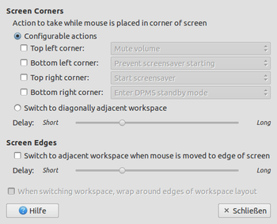
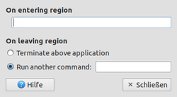

Brightside
Dieser Artikel wurde für die folgenden Ubuntu-Versionen getestet:
Ubuntu 14.04 Trusty Tahr
Zum Verständnis dieses Artikels sind folgende Seiten hilfreich:
Brightside erweitert GNOME 2 bzw. dessen Fenstermanager Metacity um die Option, die Ecken und Kanten des Desktops für bestimmte Aktionen zu nutzen. Das Projekt wurde vornehmlich gestartet, da Metacity das sogenannte "edge flipping" – damit lässt sich zwischen den virtuellen Arbeitsflächen wechseln, indem man den Mauszeiger an den äußeren Rand des Desktops führt – nicht unterstützt. Daher kommt auch der Name des Programms, obwohl weitere Aktionen mit den vier Ecken des Desktops möglich sind. Obwohl das Einstellungsfenster nicht lokalisiert (sprich nur auf Englisch) ist, sollte die Konfiguration mit Hilfe dieses Artikels keine unüberwindbare Hürde darstellen.
Offiziell arbeitet das Programm nur mit Metacity zusammen, es funktioniert aber auch problemlos unter Xfce und LXDE. Allerdings sind bei Xfce nur die Aktionen beim Berühren der Bildschirmecken interessant, da eine eigene interne Funktion zum Wechsel der Arbeitsflächen über die Bildschirmrändern vorhanden ist. Zusätzlich gibt es ab Mitte 2015 ein natives Plugin für Xfce (siehe Install Hot Corners Plugin for Xfce4 Desktop in Ubuntu 14.04/15.04  ).
).
Hinweis:
Sollte man Compiz als Fenstermanager benutzen, so funktioniert Brightside nicht. Das gilt insbesondere beim Einsatz von Unity ab Ubuntu 11.04. Die von Brightside gebotene Funktionalität ist von Haus aus in Compiz enthalten. Dazu muss man den CCSM installieren und dann im Plugin "Rotate Cube" im Reiter "Allgemein" die Option "Edge Flip Pointer" aktivieren.
Installation¶
Folgendes Paket muss installiert [1] werden:
brightside (universe )
 mit apturl
mit apturl
Paketliste zum Kopieren:
sudo apt-get install brightside
sudo aptitude install brightside
Benutzung/Konfiguration¶
Nach der Installation kann Brightside über den Befehl [2]:
brightside
gestartet werden. Dies kann wahlweise über das Terminal [2] oder über Alt + F2 geschehen. Brightside bleibt im Anschluss für die gesamte Sitzung aktiv. Um das Programm automatisch mit der grafischen Anmeldung zu starten, kann der Befehl in den Autostart [3] eingetragen werden.
Die Einstellungen sind über folgenden Befehl erreichbar:
brightside-properties
Desktop-Kanten¶
 Die Option hierzu lautet "Screen Edges" (unten im Bild) und wird über die Option "Switch to adjacent workspace when mouse is moved to edge of screen" aktiviert. Bewegt man den Mauszeiger also an die rechte äußere Seite des Bildschirms, so wird automatisch auf die nächste Arbeitsfläche gewechselt. Am linken Bildschirmrand springt man dementsprechend zur vorherigen zurück. Die jeweils aktuelle Arbeitsfläche wird wie beim herkömmlichen Wechsel über Strg + Alt + → bzw. ← kurz eingeblendet.
Wie beschrieben ist der Wechsel in beide Richtungen möglich – möchte man über die linke Kante der ersten Arbeitsfläche auf die letzte wechseln, ist dies erst möglich, wenn die Option "When switching workspace, wrap around edges of workspace layout" aktiviert ist. Gleiches gilt für einen Wechsel über die rechte Kante der letzten Arbeitsfläche zur ersten.
Über den Regler bei "Delay" lässt sich schließlich noch die Verzögerung einstellen, mit der das Programm auf den Mauszeiger reagiert. Zieht man den Balken ganz nach links erhält man einen nahezu fließenden Übergang, wie bei einem Dualscreen. Da dies jedoch recht ungewohnt ist und nicht zuletzt zu ungewollten Wechseln führen kann (denn gerade die rechte Seite ist hier besonders anfällig, da sich dort im maximierten Zustand von Programmen meist eine Bildlaufeiste befindet), hat man die Möglichkeit die Reaktionszeit bis auf 1500ms (1,5 Sekunden) zu erhöhen.
Desktop-Ecken¶
Die Desktop-Ecken können alternativ zur Steuerung von Anwendungen oder zum Wechseln der Arbeitsflächen benutzt werden.
Ecken konfigurieren¶
Wählt man im Menüpunkt "Screen Corners" die Option "Configurable Actions", stehen hier sieben vorgegebene Funktionen zur Auswahl:
"Mute volume" - bewegt man den Mauszeiger in die ausgewählte Ecke, wird die Lautstärke stufenlos stummgeschaltet und bleibt so, bis der Mauszeiger wieder entfernt wird. Sehr praktisch, wenn man Musik hört oder einen Film schaut und das Telefon klingelt.

"Prevent screensaver starting" - hat man eine relativ kurze Zeit eingestellt, in welcher der Bildschirmschoner bei Untätigkeit aktiviert wird, kann man diese Funktion nutzen, wenn man längere Texte am Bildschirm lesen möchte oder einen Film schaut. Solange sich der Mauszeiger in der Ecke befindet, wird der Bildschirmschoner nicht gestartet.
Hinweis:
Brightside arbeitet nicht mit dem ab Ubuntu 14.04 eingeführtem Light-Locker zusammen. Sollen die Screensaver-Funktionen genutzt werden, ist der XScreenSaver erforderlich. Da sich dieser mit Light-Locker nicht verträgt, muss Light-Locker dann deinstalliert werden.
"Start screensaver" - möchte man nicht auf den Bildschirmschoner warten, kann man diesen direkt starten
"Enter DPMS standby mode" - Monitor über DPMS
 in den Standby-Modus versetzen
in den Standby-Modus versetzen "Enter DPMS suspend mode" - Monitor (nicht den Rechner!) in den Suspend-Modus versetzen
"Enter DPMS off mode" - Monitor ausschalten. Zur Bedeutung der einzelnen DPMS-Optionen siehe auch hier
"Toggle showing desktop" - erfüllt die gleiche Funktion wie die Schaltfläche "Desktop anzeigen" des GNOME Panels und bietet zusätzlich die Möglichkeit, den Ecken eine selbst gewählte Funktion ("Custom action") zuzuordnen: 
"On entering region" - hier kann ein beliebiger Befehl eingetragen werden, der gestartet werden soll, wenn man mit der Maus in die jeweilige Ecke navigiert
"On leaving region" - Aktion beim Verlassen der Desktop-Ecke
"Terminate above application" - hat man mit der Ecke eine Anwendung gestartet, ist sie nur aktiv, so lange der Mauszeiger die Ecke nicht verlässt. Beim Verlassen wird die Anwendung geschlossen.
"Run another command" - die zuvor gestartete Anwendung bleibt erhalten und beim Verlassen der Ecke kann ein weiterer Befehl gestartet werden
Ecken zum Wechsel der virtuellen Arbeitsflächen nutzen¶
Analog zu den Kanten kann man auch über die Ecken zum nächsten Desktop wechseln. Ist diese Option aktiviert, kann aber keine der Ecken mehr zu etwas anderem genutzt werden.
Hinweise & Tipps¶
Mit "Kanten" und "Ecken" des Desktops sind wirklich die äußersten Pixel gemeint, die der Mauszeiger berühren kann. Im Falle der Ecken handelt es sich tatsächlich nur um jeweils einen Pixel. Dies sollte man bei der Benutzung und Konfiguration stets im Hinterkopf behalten. Brightside reagiert erst, wenn sich der Mauszeiger völlig in der Ecke befindet und dann auch nicht mehr bewegt wird.
Offiziell wird ausschließlich Metacity (der Fenstermanager von GNOME) unterstützt. Unter Xfce laufen aber ebenfalls alle Optionen. Zumindest der Wechsel der Arbeitsflächen funktioniert auch mit Openbox bzw. LXDE.
"edge flipping" funktioniert nicht mit Compiz, da dieser die virtuellen Arbeitsflächen anders verwaltet als Metacity. Zur Nutzung der Desktop-Ecken kann Brightside aber auch in Verbindung mit diesem Fenstermanager verwendet werden.
Brightside besitzt einen Eintrag im GNOME-Konfigurationseditor gconf, obwohl fast alle Optionen über das grafische Einstellungsfenster geregelt werden können. Der Schlüssel "
/apps/brightside/after_flip_command" bildet jedoch eine Ausnahme. Hier kann man einen beliebigen Befehl eintragen, der nach einem erfolgreichen Wechsel des Desktops gestartet werden soll – beispielsweise einen Systemklang.
Links¶
http://wiki.catmur.co.uk/Brightside - ehemalige Projektseite des Entwicklers Ed Catmur, nicht mehr erreichbarQuelltext
- unter Ubuntu auch aus den Paketquellen verfügbar
3D-Desktop
- Anwendungsbeispiel für Lubuntu
- Erstellt mit Inyoka
-
 2004 – 2017 ubuntuusers.de • Einige Rechte vorbehalten
2004 – 2017 ubuntuusers.de • Einige Rechte vorbehalten
Lizenz • Kontakt • Datenschutz • Impressum • Serverstatus -
Serverhousing gespendet von